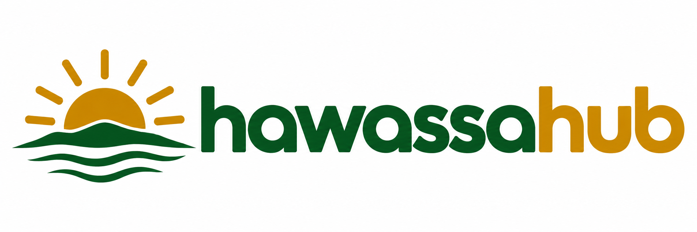

Fichee-Chambalaalla
The Sidama New Year festival, recognized by UNESCO as intangible cultural heritage.
Learn about the festival↗
ሐዋሳ ሀብ Explore HawassaSPONSORSHIP OPPORTUNITY
Contact us to feature your hotel, café, event, or service.
Your business could appear here
This is approximate page-view.
HAWASSA · SIDAMA · ETHIOPIA
From the lakeshore to the coffee table, discover the places and people that make this city special.
Start exploringTHE CITY, AT YOUR PACE
Wake up to the fish market, find your favorite cup of coffee, and make room for the unexpected. Hawassa is a place to explore, stay a while, and connect with its communities.
Find your next stop ↗A GOOD PLACE TO BEGIN
Places to explore, places to stay, and the everyday essentials.
Locations and map search results can change; please confirm before traveling.
Research-led starting points, not endorsements. Details can change; confirm directly before visiting. Health information is not an emergency directory.
WHAT’S HAPPENING IN HAWASSA
Discover festivals, culture, and community gatherings. Confirm times and locations with organizers.
The Sidama New Year festival, recognized by UNESCO as intangible cultural heritage.
Learn about the festival↗A forum listed by the Ministry of Agriculture at Sidama Cultural Hall. Confirm details with the organizer.
See organizer information↗Tell us about festivals, music, theater, business, and community events. We check details before listing them.
Email us about your event↗THE STORY OF HAWASSA
According to the city administration, Hawassa takes its name from Lake Hawassa; the word means “wide” in the Sidama language.
The administration dates the city’s establishment to 1952 in the Ethiopian calendar; today Hawassa is the seat of the Sidama Region. Local communities’ history reaches back before the city’s establishment.
Read the city’s history↗ROOTED IN SIDAMA
Hawassa is a gateway to Sidama culture, hospitality, and coffee traditions. Fichee-Chambalaalla, the Sidama New Year festival, is recognized by UNESCO as intangible cultural heritage.
Take the time to listen, ask permission, and learn from the people who know this place best.
Explore the UNESCO record ↗PLAN WITH CONFIDENCE
Useful starting points for getting here and finding services. Check locally for the most current details.
Read the practical guide ↗MEET YOU IN HAWASSA
Discover a city, support its local businesses, and make every visit more meaningful.
Find a place ↗